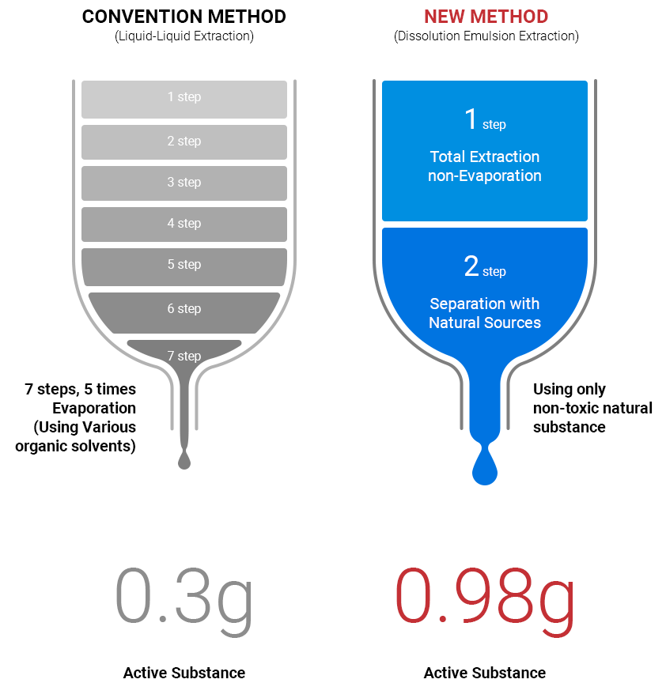

DEE
천연물의 선택적 추출을 위한 DEE(Dissolution Emulsion Extraction) 공법은 천연물에 포함된
극미량의 활성물질을 2 단계로 추출할 수 있는 新공법(특허출원 10-2019-0001031)입니다.
건조중량 대비 0.1% 미만의 극미량 활성물질을 2 단계를 거쳐 Emulsion 형태로 추출함으로써
경제성과 활용도를 높였습니다.
1 Kg of dried material(Active Substance 1 g)

2step
90%
Separation of over 90% of active substances in a two-step process
기존의 통상적 방법인 LLE(Liquid-Liquid Evaporation)을 이용하는 경우, 7 단계 이상의 공정을 거쳐야 활성물질을 유효하게 추출할 수 있으나
경제성/생산성이 떨어져 상업화 불가한 단점이 있으나, 당사의 DEE 공법은 2단계 추출로 활성물질의 90% 이상 분리 가능한 고유 분획 추출 방식입니다.
추출 과정에 사용되는 소재는 모두 의료용 소재를 활용하여 안전성 확보하였으며, 극미량 함유된 다양한 천연 활성물질을 경제적으로 추출하여 상업화 가능합니다.
추출 과정에 사용되는 소재는 모두 의료용 소재를 활용하여 안전성 확보하였으며, 극미량 함유된 다양한 천연 활성물질을 경제적으로 추출하여 상업화 가능합니다.
DN-001
(주)디네이쳐는 고유한 DEE 추출법을 이용하여 고유소재 CMX를 개발하고, 이 소재의 효능 등을 연구해 왔습니다.
‘JAK 저해’와 ‘Wnt 활성’의 복합 기전을 가짐 소재임을 밝혔습니다.
‘JAK 저해’와 ‘Wnt 활성’의 복합 기전을 가짐 소재임을 밝혔습니다.
Biomolecules 2021, 11(7), 976 : https://dio.org/10.3390/biom11070976
Processes 2020, 8(7), 767 : https://dio.org/10.3390/pr8070767
이와 같은 연구결과를 바탕으로, ‘Wnt 활성’ 기반의 탈모증에 적용 가능한
상업 제품 ‘아나셀(ANACELL)’을 세계 최초로 발매하였습니다. 당사는 CMX의 지속적인 연구를 바탕으로 글로벌 경쟁 신약 개발과 ‘삶의 질’ 개선에 노력하겠습니다.
상업 제품 ‘아나셀(ANACELL)’을 세계 최초로 발매하였습니다. 당사는 CMX의 지속적인 연구를 바탕으로 글로벌 경쟁 신약 개발과 ‘삶의 질’ 개선에 노력하겠습니다.
DN-002
해당 스마트폴리머(Smart Polymer) 기술은 여성의 질내 환경에 따라
주성분A의 머무름 시간과 주성분B의 방출 타이밍이 컨트롤 되어 혐기성 세균의
증식을 억제하고, 유익균의 균형을 찾아 질내 환경을 건강하게 유지하는 기능을
수행합니다. (pH 감응형 스마트 폴리머 시스템)
Biodegradable polymer with biocompatibility
that is harmless to the human body
주성분 A는 인체에 무해한 생적합성(Biocompatibility)을 갖춘 생분해성
(Biodegradable) 고분자 중합체로서 비화학적인(물리적인) 기전으로 안전하게
세균과 세균증식의 기초단계인 바이오필름(Biofilm) 생성을 억제한다고 알려져
있습니다.
Provide a healthy habitat for probiotics
주성분 B를 포접하는 겔(Gel) 형태의 주성분 A는 프로바이오틱스(Probiotics)와
동일한 성분을 방출해 안정하고 빠른 효과를 유도하고, 프로바이오틱스가
건강하게 서식 할 수 있는 환경을 조성할 수 있습니다.